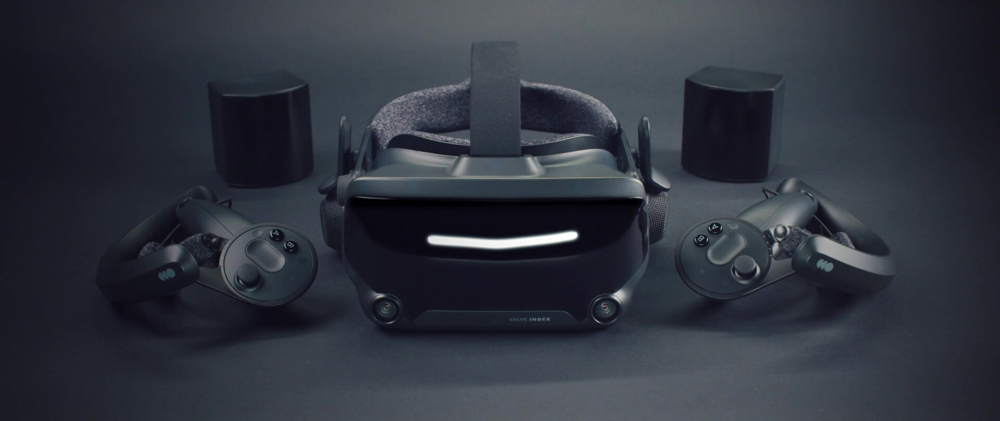

What is virtual reality? Virtual reality is a collection of hardware and software that allows a user to interact with a virtual 3-dimensional space. The uses are unltimately boundless. As of right now virtual reality (VR) is used mainly media consumption and simulations. VR's hardware is becoming ever more powerful by the year, with new headsets having higher resolutions and superior lenses than ever before. Along with this, VR is becoming cheaper and more accessible to the public, which will further grow this market. As for software, there have been huge improvements since VR became main stream. For example, the video game Boneworks made by Stress Level Zero, is a game with a fully implemented physics engine. This means the player is capable of interacting with the game world, like in real life, where objects have weight, everything has collisions, and firearms have recoil.
In terms of hardware, there are multiple factors that determine the quality of a headset. To start with, you have to consider the display's panel type and resolution. An OLED panel is the preferred panel type when considering VR. This is because of its capabilities of displaying very deep blacks as well as great HDR performance, which would maximise the realism of the image. The downside is that it's very expensive to manufacture, especially for higher resolutions, and typically visual clarity is preferred over colour accuracy and HDR performance. This is why LCD screens have become the main stream solution, as well as being able to produce a smoother viewing experience with higher refresh rates. Resolution is always increasing, which of course increase the visual quality of the image. However, something that is often over-looked is the type and quality of the lenses used. There are two main types of lenses: Pancake and Fresnel lenses. Pancake lenses are the newer iteration of lens types. They are very thin compared to Fresnel lenses, allowing a headset to be lighter and smaller. They also offer far higher clarity, with reduced screen-door effect. Another important factor for the visual quality is the field of view (FOV). A wider FOV creates a more realistic impression of the virtual world. The natural FOV that a human sees is 210 degrees. Currently, the average headset has an FOV of 110 degrees, which unfortunately does cause the feeling of viewing the virtual world through binoculars. However, the FOV, like everything else, is becoming larger through each generation of headset. The next piece of hardware that is integral for the VR to work well, is the tracking. There have been multiple solutions for 6 DOF tracking. Originally, "base stations" - (cameras) were and still are used to track the headset and its controllers. The upside to this is that no matter where you look or move your controller, they will nearly never lose tracking. The alternate solution to this is called "inside out tracking". This refers to a headset which has cameras on itself, and uses software to recognise the environment and track itself relative to where it is in the environment. This solution is far more convenient than base stations, because it doesn't require the user to set up cameras. However, if the controllers are moved out of the view of the cameras on the headset, then they will lose tracking. There are also full body tracking solutions, where you place sensors around your body and base stations track your entire body and recreate it in a virtual space. This is the most expensive solution out of all the tracking, but creates the greatest amount of immersion, and is considered as enthusiast hardware. The penultimate piece of hardware that I'm going to talk about are the controllers. The controllers, I would argue, are one of the most important factors for a good VR system, because they determine how you interact with the virtual world. Currently, there are experimental force feedback gloves that will track each individual finger and uses a series of servo motors to lock the fingers in place when holding something like a ball. These are currently not available to the wider public, but are projected to be soon. The next best solution comes from Valve - a company that specialises in game development and Steam's parent company. The Valve Index is their first headset that they ever released, back in 2019, and it offers the best controllers on any consumer headset to this day. They work by using pressure sensitivity and capacitive touch to track each finger and how hard the user squeezes the controller. They also have a strap that fits around the user's hand, allowing the hand to be completely open, and the controller not falling out of the user's hand. Of course, these controllers are also one of the most expensive on the consumer market. Oculus, now owned by Meta, have their own controllers, which don't offer the same features as the Valve Index's controllers, but are far cheaper. Finally, the last thing to consider in a VR system is, "Does it require a PC to run the software I want to run?". As of today, there are multiple "stand alone" headsets that can function without the use of a PC and wires. As you can imagine, this makes them far more accessible, because no extra hardware is required to use the headset. However, you will also end up with worse graphic fidelity, due to the headset having a mobile chip doing all the processing, instead of a fully fledged PC. The downside of connecting your headset to a PC (apart from the actual expense of owning a PC in the first place), is that normally a cable is required to plug into the PC to the headset. In recent times, there are solutions that allow a user to connect their headset wirelessly to their PC, however it requires an incredibly fast wireless connection.